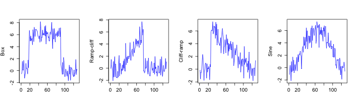
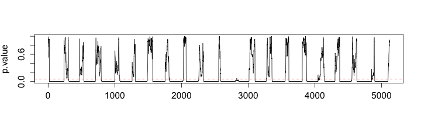
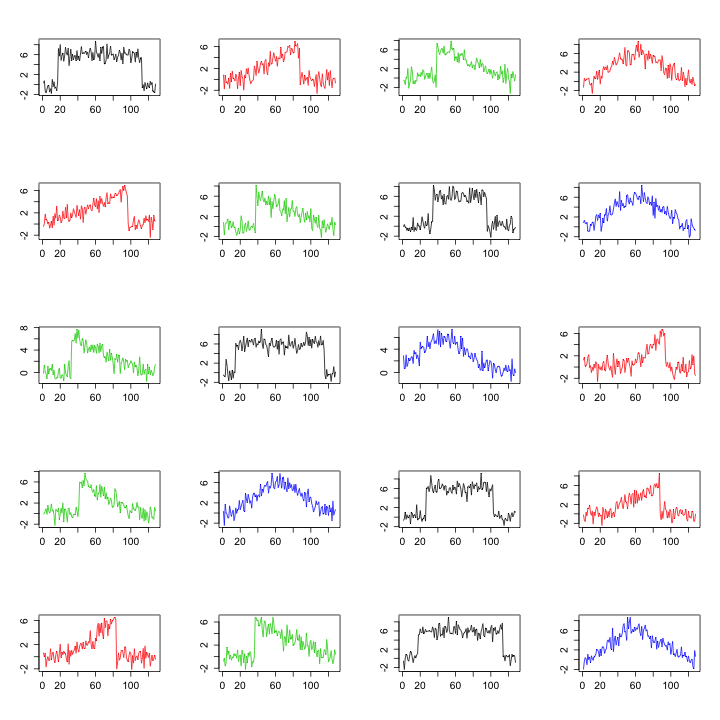

Goal
Pattern (shape) transition within turbulence.
- Location?
- Similar?
- Physical mechanisms?
- How do they transit?

By Yanfei Kang
Main supervisor: Prof. Kate Smith-Miles
Associate supervisor: Dr. Danijel Belusic
Motivation
Methodology: two steps
Applications
Conclusion
Time-table for completing thesis
Publications
References
Pattern (shape) transition within turbulence.
We started from artificial time series.
Four shapes: \(l=128\)



Extract shapes.
Cluster the extracted shapes.
Perform white noise test on each subsequence.
Why? Only care the non-noise subsequences.
What? Has no correlation between its values at different times.
How? Ljung-Box test (Box & Pierce (1970)).
\(H_0\): The data are independently distributed; \(H_1\): The data are not independently distributed.
The test statistic is \[Q=n(n+2)\Sigma_{k=1}^{h}\frac{\hat{(\rho_k^2)}}{n-k},\] where \(n\) is the sample size, \(\hat{\rho_k}\) is the sample autocorrelation at lag \(k\), and \(h\) is the number of lags being tested.


A shape is a subsequence whose noise test \(p\) value is smaller than a predefined significant level \(\alpha\) (\(\alpha=0.05\)).
Assume there exists a consecutive sequence of \(p\) values \(p_s,p_{s+1},\cdots,p_t\) which satisfies:
then we define the subsequence \(x_{\left\lfloor\frac{t+s}{2}\right\rfloor}(t)\) as the shape we are interested in.
Avoids the meaningless clustering issue.
Statistically non-noise.


Why? Many areas, such as climate, rely on red noise (Storch & Zwiers (1999)).
What? \(AR(1)\) stationary Gaussian process at unit lag (Storch & Zwiers (1999)): \[x(t)=\phi x(t-1)+\epsilon(t),\] where \(x(t)\) is the value of variable at time \(t\), \(\phi\) is the autocorrelation coefficient with lag \(1\), \(\epsilon(t)\) is the value of white noise function at time \(t\).
How? See next slide.
To test whether a subsequence is red noise
Firstly fit an \(AR(1)\) model on the subsequence
Perform white noise test on the residuals.
Residuals: white noise?
Extract shapes according to the red noise \(p\)-value series.
Two ways:
Models
Phase randomization (Dahlhaus et al. (2010))
Randomly generate \(1000\) \(AR(1)\) (linear) models with \(l=500\)
Introduce non-linear components into the linear models (Gluhovsky & Agee (2007))
Investigate change of shape numbers before and after including the non-linear components
Take the Fourier Transform of the Turbulence temperature time series with length \(l=20000\).
Randomize phase information while keeping the magnitude.
Do inverse Fourier Transform to get back to time domain.
Investigate change of shape numbers and total length of shapes after phase randomization.


A cluster is a set of entities that are alike, and entities from different clusters are not alike.
Clustering can be used for understanding data.
To perform clustering we need to understand data.
Hierarchical clustering based on features (Wang et al. (2006)).
The feature set can be chosen for a specific application to best capture the underlying characteristics of the shapes.
Hierarchical clustering of the extracted shapes in the feature space.

1. No features $=$ Bad clustering.
2. Similar in euclidean distances $\neq$ Similar shapes.
3. Similar shapes with different shifts or lengths $\rightarrow$ One cluster.

1. Shapes with noise.
2. Our method can avoid the problem.
The clustering can be done in an on-line manner using the Growing Feature Quantization method proposed in Kang (2012). 
Cooperative Atmosphere-Surface Exchange Study (CASES-99), conducted near Leon, Kansas, USA, during October, 1999 (
Feature set
Shape features
Smoothness: \(\frac{\text{sd}(\text{diff}(x))}{\text{mean(diff}(x)}\)diff kurtosis: kurtosis of diff(\(x\))diff Max: \(\text{max}(\text{diff}(x,\text{lag}=5))\)diff Min: \(\text{min}(\text{diff}(x,\text{lag}=5))\)sd: measured in the same way as in the artificial time seriesKurtosis: measured in the same way as beforeSkewness: measured in the same way as beforePeroid: measured in the same way as beforePhysical feature: Stability measure using Richardson number \(R\).

With the stability changing from - to + and - again (time changing from day to night and back to day time), the shape cluster number changes at the same time.
In line with the reality.
Meaningfulness of the shape clustering.
A two-step method for shape extraction from time series is proposed:
Better results than literature
Robust to noise level
Applied to artificial data
Applied to real world data
A big step regarding turbulence time series shape extraction.
Kang Y (2012). “Real-time change detection in time series based on growing feature quantization.” In Proceedings of the 2012 International Joint Conference on Neural Networks (IJCNN), pp. 1–6. http://dx.doi.org/10.1109/IJCNN.2012.6252381.
Kang Y, Smith-Miles K and Belusic D (2013). “How to Extract Meaningful Shapes from Noisy Time-Series Subsequences? (In press).” In Proceedings of the 2013 IEEE Symposium Series on Computational Intelligence (SSCI).
Kang Y, Smith-Miles K and Belusic D (2013). “A Shape Extraction Method for Atomospheric Time Series. (In preparation).” Quarterly Journal of Royal Meterorological Society.
Kang Y, Smith-Miles K and Belusic D (2013). “How to Extract Meaningful Shapes from Noisy Time-Series Subsequences? (In press).” In Proceedings of the 2013 IEEE Symposium Series on Computational Intelligence (SSCI).
Storch HV and Zwiers FW (1999). Statistical Analysis in Climate Research. Cambridge University Press.
Mueen A, Keogh EJ, Zhu Q, Cash S and Westover MB (2009). “Exact Discovery of Time Series Motifs.” In Proceedings of SIAM International Conference on Data Mining (SDM), pp. 473–484.
Wang X, Smith KA and Hyndman RJ (2006). “Characteristic-Based Clustering for Time Series Data.” Data Mining and Knowledge Discovery, 13(3), pp. 335-364.
Kang Y (2012). “Real-time change detection in time series based on growing feature quantization.” In Proceedings of the 2012 International Joint Conference on Neural Networks (IJCNN), pp. 1–6. http://dx.doi.org/10.1109/IJCNN.2012.6252381.
Keogh EJ, Chakrabarti K, Pazzani MJ and Mehrotra S (2000). “Dimensionality Reduction for Fast Similarity Search in Large Time Series Databases.” Journal of Knowledge and Information Systems, 3(3), pp. 263-286.
Belusic D and Mahrt L (2012). “Is geometry more universal than physics in atmospheric boundary layer flow?” Journal of Geophysical Research, 117(D09115). http://dx.doi.org/10.1029/2011JD016987.
Chakrabarti K, Keogh EJ, Mehrotra S and Pazzani MJ (2002). “Locally adaptive dimensionality reduction for indexing large time series databases.” ACM Transcations on Database Systems (TODS), 27(2), pp. 188-228.
Keogh EJ, Hochheiser H and Shneiderman B (2002). “An Augmented Visual Query Mechanism for Finding Patterns in Time Series Data.” In Andreasen T, Motro A, Christiansen H and Larsen HL (eds.), Proceedings of Flexible Query Answering Systems (FQAS), the 5th International Conference, volume 2522 series Lecture Notes in Computer Science, pp. 240-250. ISBN 3-540-00074-7.
Das G, Lin KI, Mannila H, Renganathan G and Smyth P (1998). “Rule Discovery from Time Series.” In Proceedings of the 4th International Conference on Knowledge Discovery and Data Mining (KDD), pp. 16-22.
Agrawal R, Faloutsos C and Swami AN (1993). “Efficient Similarity Search In Sequence Databases.” In Lomet D (ed.), Proceedings of the 4th International Conference of Foundations of Data Organization and Algorithms (FODO), pp. 69–84.
Chan KP and Fu AWC (1999). “Efficient Time Series Matching by Wavelets.” In Kitsuregawa M, Papazoglou MP and Pu C (eds.), Proceedings of the 15th International Conference on Data Engineering (ICDE), pp. 126-133. ISBN 0-7695-0071-4.

/
#